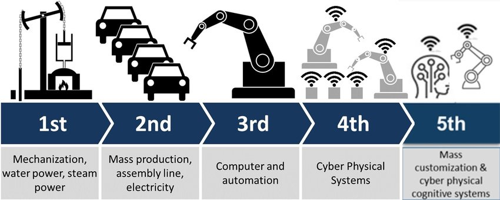

The 5IR is a concept that has been designed to harmonize the working space and efficiency of humans and
machines in a consistent manner.Enabled by a variety of emerging applications and supporting technologies,
the 5IR is expected to increase manufacturing production and customer satisfaction. In this work,
we presented our thoughts on supporting technologies and potential applications of the 5IR.
The 5IR focuses on stakeholder value rather than shareholder value, reinforcing the industry's role and
contribution to society. Below are the key drivers of 5IR
Human-centric: Human ingenuity and
craftsmanship are combined with the speed, efficiency, and consistency of robots in 5IR. Thus it promotes human empowerment,
talent, and diversity.
Sustainability: Additive manufacturing, often known as 3D printing, is one of the most notable elements of 5IR, and
it is used to make manufacturing items more sustainable. In 5IR, additive manufacturing aimed to improve customer happiness by
incorporating benefits into goods and services.
Resilient: The term "resilience" refers to the necessity to improve industrial production's robustness.
High resilience can be attained when humans and robots operate together.
Reduced cost and environmental control: Climate, humidity, temperature, and energy usage are all monitored in real-time and
predicted using smart, networked sensors and specialized algorithms. This is especially beneficial in farms that are
highly dependent on the weather. Knowing what to expect and where to act might help to avoid costly mistakes and boost the output.